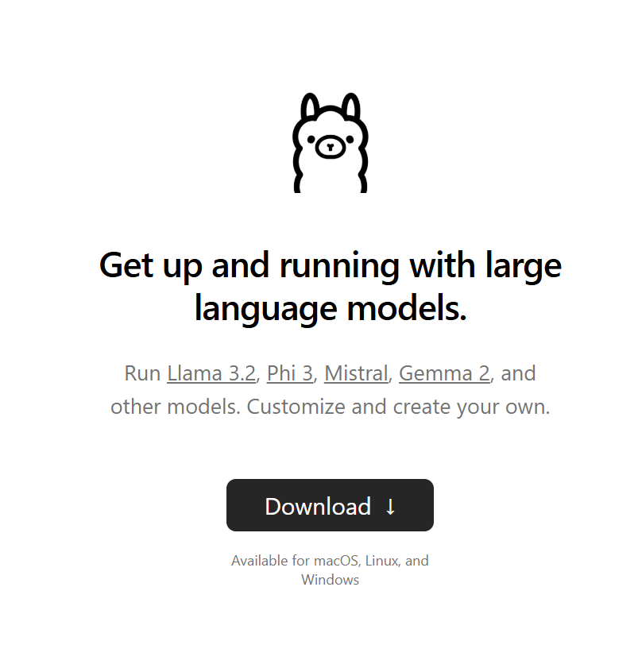
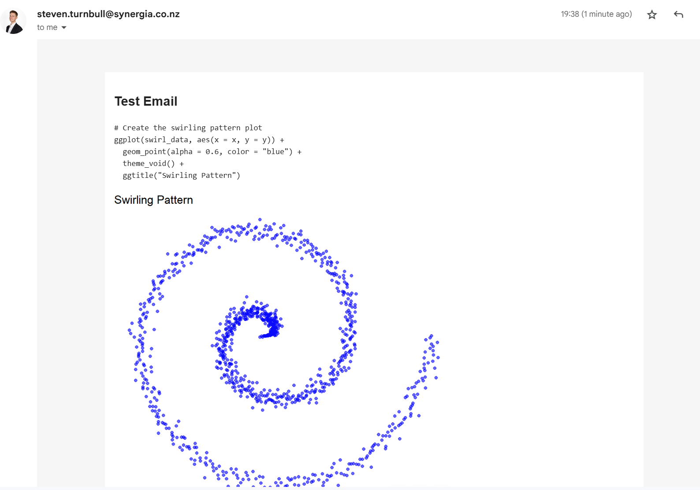

Data scientist
Dr Steven Turnbull
I’m a data scientist who loves problem solving and understanding how data flows from operations to decision making.
About
I’ve developed expertise in automating reproducible analytical pipelines, ensuring that data is and remains trustworthy and valid.
I love learning new skills, and this passion has built a repertoire spanning survey design and administration, geospatial analysis, applications of AI, qualitative analysis. I like stepping out of my comfort zone and picking up new skills to solve the problems I come across.
I started out as a researcher in the sociology of education. My research interests involve understanding how students are channelled down different pathways. I have specific expertise with the sociological theory of Pierre Bourdieu.
What I work on
Reproducible analytical pipelines Survey design and administration Geospatial analysis Applications of AI Qualitative analysis Sociology of education
PhD thesis in education investigating student pathways through STEM
University of Auckland ResearchSpace
2020 Prime Minister’s Science Prize
Network and geospatial analysis
The Lancet Regional Health: Western Pacific
TidyTuesday on GitHub
Data infrastructure
ETL/ELT pipelines, dashboarding
Latest posts

12 December 2024
Make Your Own Local Email Summary AI
In this post, I show you how to make your own automated email summary using a local AI.

3 December 2024
Automating Emails from R
In this post, I show you how to send emails directly from R, containing contents made in Quarto.

5 November 2024
Visualising Ethnicity from NZ Census 2023
In this post, I talk about why you should treat big data as ducks 🦆, see populations as people 👨👩👧👦, and why UpSet plots will make you happy 😃.
No matching items
Research publications
Emily P. Harvey, Joel A. Trent, Frank Mackenzie, Steven M. Turnbull and Dion R. J. O’Neale (2022). Calculating incidence of Influenza-like and COVID-like symptoms from Flutracking participatory survey data. MethodsX. Read
Turnbull, S. M., Hobbs, M., Grey, L., Harvey, E., Scarrold, W., & O’Neale, D. (2022). Investigating the transmission risk of infectious disease outbreaks through the Aotearoa Co-incidence Network (ACN): a population-based study. The Lancet Regional Health: Western Pacific, 20, 100351. Read
Stephens, J. M., Watson, P. W. S. J., Alansari, M., Lee, G., & Turnbull, S. M. (2021). Can Online Academic Integrity Instruction Affect University Students’ Perceptions of and Engagement in Academic Dishonesty? Results From a Natural Experiment in New Zealand. Frontiers in Psychology, 12, 366. Read
Turnbull, S. M., & O’Neale, D. R. (2021). Entropy of Co-Enrolment Networks Reveal Disparities in High School STEM Participation. Frontiers in Big Data, 3, 56. Read
Turnbull, S. M., Meissel, K., Locke, K., & O’Neale, D. R. (2020). The Impact of Science Capital on Self-Concept in Science: A Study of University Students in New Zealand. Frontiers in Education, 5, 27. Read
Turnbull, S. M., Locke, K., Vanholsbeeck, F., & O’Neale, D. R. (2019). Bourdieu, networks, and movements: Using the concepts of habitus, field and capital to understand a network analysis of gender differences in undergraduate physics. PLoS ONE, 14(9), e0222357. Read